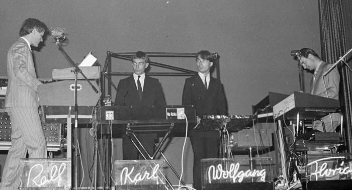

Van de hoofdredacteur
Welkom bij het tweede nummer van SoR Magazine. Deze maand reizen we naar Duitsland, naar de muziek die de Engelsen krautrock noemden.
Veel mensen kennen Kraftwerk, en iedereen kent David Bowie. Maar weinigen weten welk verhaal erachter zit. Het is een verhaal over een land dat na de oorlog opnieuw moest beginnen, over jongeren die hun ouders vroegen wat ze hadden gedaan, en over muzikanten die bewust niet terug wilden naar het verleden en ook niet Amerika wilden nadoen. Ze maakten iets nieuws, met bandrecorders, eindeloze ritmes en de eerste synthesizers.
Dat nieuwe geluid reisde verder dan ze ooit hadden gedacht: naar Bowie in Berlijn, naar de Bronx en naar Detroit, waar zwarte jongeren er de techno van maakten. En die techno kwam weer terug naar Berlijn, na de val van de Muur. Geschiedenis vertellen via muziek: daar is SoR voor.
Lees een verhaal, zet het fragment aan en lees verder. Bij het verhaal over Can zie je de band in 1971 in de Beat-Club: vier mannen die een ritme spelen dat nooit ophoudt. En sluit af met de tijdlijn, van het uur nul tot Kid A.
Mis je een plaat die hier volgens jou thuishoort? Laat het me weten.
Jan-Wolter SmitHoofdredacteur SoR Magazine
Na 1945 moest Duitsland opnieuw beginnen, ook in de muziek. Eind jaren zestig wilden jonge Duitsers niet langer de Schlager van hun ouders horen, en ook niet de rock van de Engelsen en Amerikanen naspelen. Ze zochten een eigen geluid, en vonden het in eindeloze ritmes, bandrecorders en synthesizers. In Engeland noemden ze het spottend krautrock. Maar uit Keulen, Düsseldorf en Berlijn kwam muziek die David Bowie veranderde, de techno in Detroit op gang hielp en tot vandaag doorklinkt.
In dit nummer

Krautrock · verhaal
Het jaar nul
Een land in puin, ouders die zwegen en studenten op straat. Waarom Duitse jongeren eind jaren zestig hun eigen geluid gingen zoeken.

Krautrock · verhaal
Het ritme dat nooit ophoudt
Twee leerlingen van Stockhausen, een jazzdrummer en een Japanse straatzanger: Can. En twee mannen uit Düsseldorf die een ritme uitvonden als een lege snelweg: Neu!

Krautrock · verhaal
De mens-machine
Vier mannen in pak, een kleine synthesizer en een rit over de autobahn. Hoe Kraftwerk uit Düsseldorf de toekomst een geluid gaf.
Krautrock · verhaal
Van Berlijn naar Detroit
David Bowie vluchtte naar Berlijn, een dj in de Bronx leende een Duitse trein, en in Detroit ontstond de techno. Hoe krautrock de wereld rondging, tot aan Radiohead.

SongtekstanalyseKrautrock
Trans Europa Express
Een trein, een paar zinnen en een groet aan Iggy Pop en David Bowie. We lopen het beroemdste lied van Kraftwerk regel voor regel door.
TijdlijnKrautrock
Tijdlijn 1945–2000
Van het uur nul tot Kid A: blader door vijfenvijftig jaar Duitse muziek, met een fragment bij bijna elk jaar.
Luister en leer
Spotify-playlist
Krautrock in 23 nummers
LessonUp-les
Krautrock in de klas
Een les over Duitsland na de oorlog en de muziek van Can, Neu! en Kraftwerk, met fragmenten, vragen en een quiz.
Alle fragmenten


Coverfoto: Andréas Hagström · Public domain